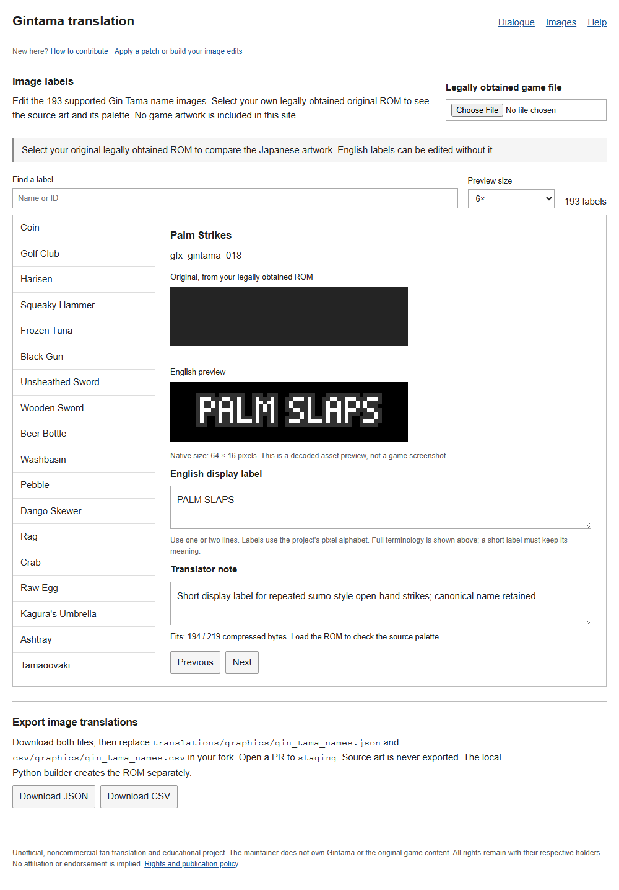
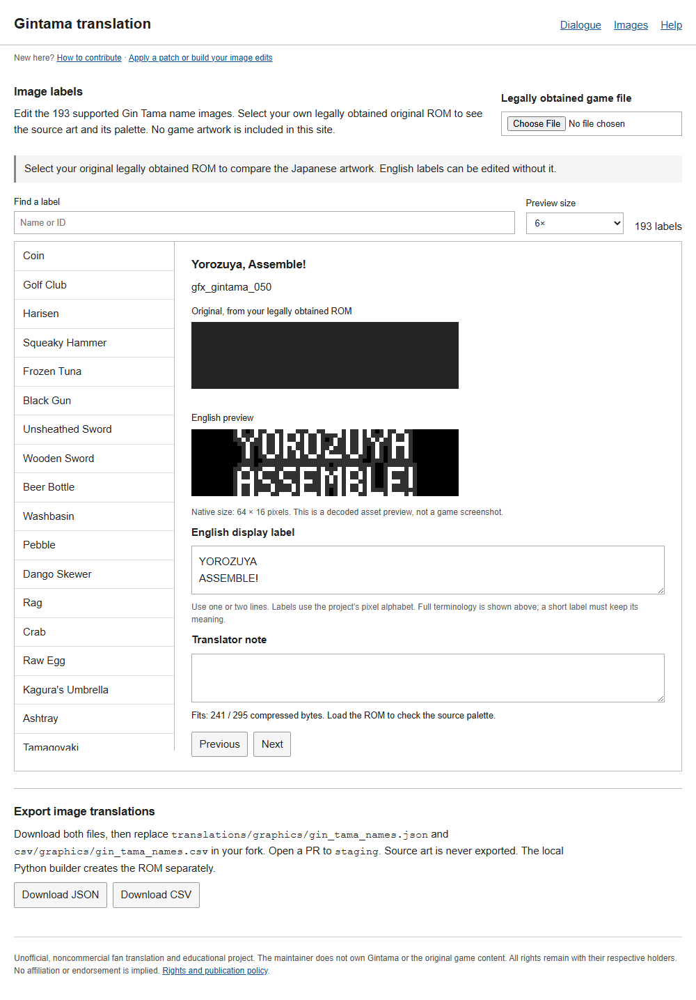

English translation of Gintama: Gintoki vs. Hijikata!? Kabukichou Gintama Dai Soudatsusen!! for Nintendo DS.
Your first translation
You do not need to code to help translate. Start with one record and Suggest on GitHub. You need a GitHub account and your own legally obtained, matching ROM to check the Japanese. No Python, Git, fork or file upload is needed.
- Open Dialogue and choose your game file. It is read locally and stays on your computer.
- Choose a Batch, then select a line from the list.
-
Write the English. Keep the page count shown above the text box; type
\ffor a page break. Give every page some text. Add a note if anything is uncertain. - Click Suggest on GitHub, sign in if needed, check the prepared suggestion and submit the issue.
That submits one record for review. A maintainer checks the wording and local build before accepting it; the issue does not publish the edit. Accepted suggestions are credited to the account that opened the issue, with a link on the translators page. Keep Yorozuya, Gin Tama and character names consistent. If you only proofread the English, say so in your note.
Use Opening for the indexed first-cutscene entries, Battle for battle text, or Images for name labels. These also use Suggest on GitHub. Keep opening parts in their existing count and order; for image labels, check native size and wait for Fits. Other adventure cutscenes are not indexed yet.
Issues are public under your GitHub account. Submit English and notes only; keep game files, source dumps, captures, private paths and contact details out of the issue. Read the contribution terms.
Submit several field lines or image labels
- This optional route is for several records together. Make your edits in Dialogue or Images. For image labels, check native size and wait for Fits.
- Download both JSON and CSV for the same batch. Drafts otherwise stay only in this browser.
- Fork the project repository. Uncheck Copy the main branch only so your fork includes staging. In your fork, select that branch, use Sync fork → Update branch if offered, then create your contribution branch from it. Upload both files to the matching folders below.
- Open a pull request to staging, check the changed files and describe your edits. Carry over only your own edits if the batch has changed since the website was built. Update the same branch if reviewers request changes.
Dialogue example: translations/ready/batch_0001.json and
csv/ready/batch_0001.csv. Use your actual batch’s
existing names and folders.
Image labels:
translations/graphics/gin_tama_names.json and
csv/graphics/gin_tama_names.csv.
Opening exports replace reference/opening_scene.json.
Battle exports contain the selected script; merge its messages into
reference/battle.json, keeping every other script and existing entry.
These packs do not need CSV files. Test locally first; CI checks source identities,
but cannot check your ROM's message fit. The
editor guide
explains both routes.
Remove any (1) suffix added by your browser. Keep IDs,
hashes and record order unchanged. Anyone with a GitHub account can
review. Two current account approvals mark valid translation edits for
the owner's attention. Only the owner merges into
staging or main; nothing merges
automatically. New commits need fresh approvals. Download releases
from main and submit translations to staging.
See the upload walkthrough for each GitHub step. Submit English and notes only; keep game files and captures private. Suggestions and PRs are public under your GitHub account, so remove private paths and contact details. Before using Git, check the commit email advice. Read the contribution terms.
See image-label examples


Run the editor locally
Install Python 3.13 (Python 3.11 is also tested), extract the project source and open a terminal
in its folder. On Windows, use the commands below. On macOS/Linux, use
python3.13 instead of py -3.13.
py -3.13 tools/build_web.py --out ../editor-site py -3.13 -m http.server 8000 --bind 127.0.0.1 --directory ../editor-site
Open http://127.0.0.1:8000/. Keep the terminal running;
Ctrl+C stops it.
If a label does not fit, shorten it or use two lines. If JSON/CSV checks fail, download both again from the same editor state. The dialogue editor checks page breaks; the Python build checks the font and final fit. If a build says the dialogue is too long, shorten it and download both files again. To test image changes in-game, follow installation. Dialogue exports are drafts; the current build applies the bundled field dialogue, opening scene and battle text. There are 8424 field messages (37.47% of 22480 indexed records), 42 of 71 field batches complete, 520 opening cutscene entries and 406 battle messages (0.29% of 142242 indexed battle records). Indexed totals include records the writers cannot edit. Most dialogue remains untranslated.
To test opening or battle edits locally, download their JSON and use
--cutscene or --battle with the
local builder. A browser export is a draft;
the build checks whether it fits. You can submit one suggestion without
installing Python or building a ROM yourself.
Maintainers can follow the review and acceptance steps to take an issue through a checked staging PR, publish it on main and close the issue.